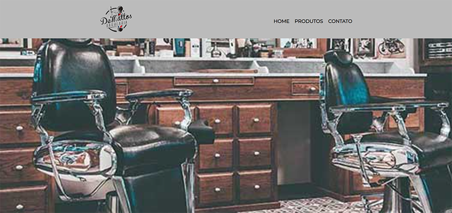
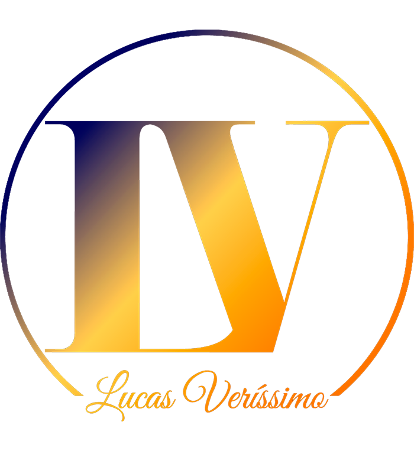

HOME
PROJETOS
Site Barbearia

Site de uma barbearia responsivo e adaptável para mobile. Com menu de interatividade, produtos e formulário de contato.
Clone Netflix
Site de um clone da interface da Netflix usando JQuery para fazer o efeito "Carousel".
Este Portifólio
Portifólio responsivo com vários efeitos no css, como o efeito parallax.
Logo

Criação de logos minimalistas e criativas